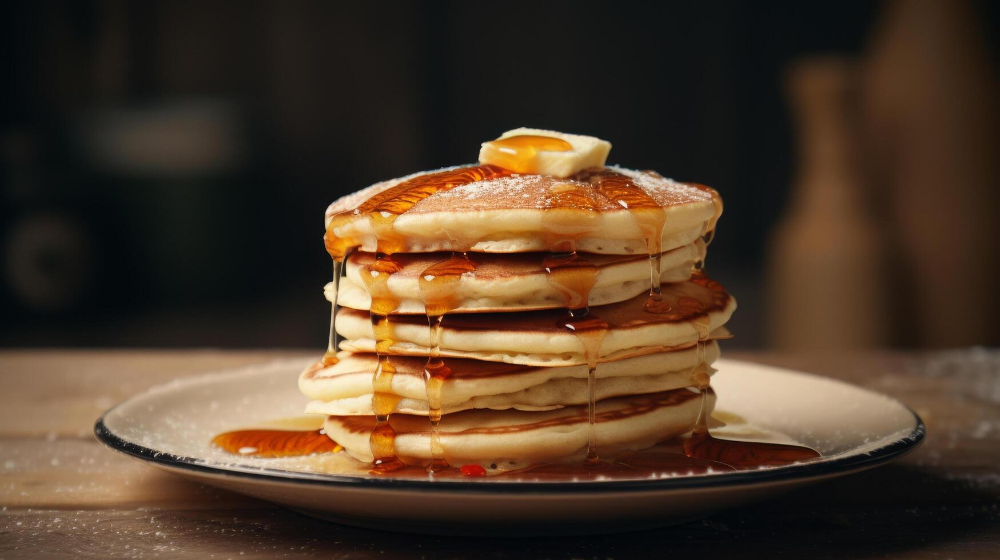

A soft, fluffy breakfast favorite that's quick to make and perfect with maple syrup, honey, or fruit.
⏱ Preparation time |
🍽 Serves |
⭐ Difficulty |
20 mins |
2 people |
Easy |
Don't press the pancakes with a spatula. It makes them less fluffy!